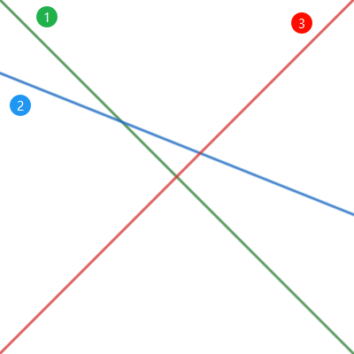
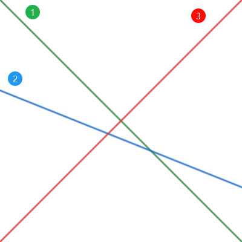

AP325 練習題解 (Ch03)
P-3-1. 樹的高度與根
這題在這裡主要是練習 queue 的用法，針對 tree 的解法在 P-8-4（題目相同）。
使用 bottom-up 的方法，確保每個節點都在它的 child 之後計算，減少重複路徑。
先記錄每個節點的 parent，同時將沒有 child 的節點加入 queue。重複將執行以下動作：
- 從 queue 中 pop 一個節點
v。 - 將
v的高度（節點到最遠 child 的距離，初始化時皆為 0）加到 total，並找出該節點的 parentp。 - 若此節點沒有 parent (
p == 0)，表示已經到達這個 tree 的 root。 - 更新 parent 的高度為
max(height[p], height[v] + 1)。 - 若 parent 的所有 child 已經遍歷過，則將
p加入 queue。
P-3-2. 括弧配對
這題要檢查一串括號是否左右平衡。首先逐一將括號放入 stack，由於每次檢查都要確認是三種括號的哪種很花時間，因此先建立一個字串 ([{)]}，將六個括號編號為 0 ~ 5，只在加入 stack 時搜尋一次並記錄對應編號。
若遇到右括號，則檢查是否能配對。根據上面的字串，左括號與對應的右括號編號相差 3，藉此來檢查 stack 的 top 是否與右括號配對，配對成功就 pop。若檢查完最後一個括號且 stack 為空表示是平衡的。
Q-3-3. 加減乘除
這題的運算式只有加減乘除，不包含括號，且數字為一位正整數，因此不算太複雜。乘除的優先級大於加減，因此需要先將加減的操作暫存。
設 res 為運算結果；tmp 暫存加減的數字，初始值為第一位數字。之後重複進行以下操作：
- 往後讀取兩個字元，第一個為運算子，第二個為運算元（要從字元轉成數字再運算）。
- 若運算子為乘除，直接與
tmp運算。 - 若運算子為加減，先將
tmp加到res；運算子為+，直接將tmp設為運算元，否則設為負的運算元。 - 重複 1. ~ 3. 直到字串尾端。
最後再將 tmp 加到 res 即為答案。
P-3-4. 最接近的高人
這題要找到前方比自己高且最接近的人的距離，若沒有比自己高的則為前方人數總和，相當於將第 0 個人設為無限高。
首先建立一個 stack，每讀入一筆資料，就用 while 將 stack 內小於等於該筆資料的 pop 掉（由於是線性讀取資料，while 總次數不會超過 n）。因為若第 i - 1 個人的身高小於等於第 i 個人矮，則第 i - 1 個人必不可能成後後面的人的「高人」。
清理完前面的資料後，stack 的 top 即為「高人」，計算距離加入 total，然後將自己的高度與 index push 到 stack 裡。重複到最後一筆資料，最後的 total 即為答案。
Q-3-5. 帶著板凳排雞排的高人
這題與上一題類似，只是多了板凳的條件，重點在於要維護一個遞增或遞減的序列。為了方便使用二分搜，選擇 set 做為資料結構，一樣儲存高度與 index 組成的 pair。
先將第一個資料插入 set，再重複執行：
- 使用
upper_bound()搜尋第一個高人的位置j。 - 若找不到
j則「最大可挑戰人數」為i - 1；有找到則為i - j - 1。 - 從 set 開頭開始，將身高小於
h[i]的 pair 移除。 - 將自身插入 set。
P-3-6. 砍樹
使用 stack 來暫存不能砍的樹（往左或往右倒會壓到其他樹），每當砍掉一棵樹就 stack 的 top 開始找有沒有樹能砍（相當於往左搜尋）。而前一個被砍的樹一定在右邊，因此只需要檢查右方條件。
P-3-7. 正整數序列之最接近的區間和
先將 sliding window 的左右邊界設為 0，移動右邊界並計算總和直到即將超過 k，若當前總和大於之前的最大總和，更新並重新計算相同最大總和次數。當總和超過 k，移動左邊界直到總和小於等於 k。
P-3-8. 固定長度區間的最大區段差
若單純用變數存最大與最小值，區間移動時移入的值直接比較就好，但最大或最小值被移出的話，還要重新尋找。因此可以使用兩個 deque 來分別保存最大最小值的候選，以最大值為例：
- 先將序列的第一個 index 放入 deque（使用 index 便於檢查是否移出區間）。
- 區間移動後，若最大值（deque 的 front）被移出區間，則 pop front。
- 重複將 deque 的 back 與移入的值比較，若小於等於移入值就 pop back，使 deque 成為遞減序列。
- 將移入值 push 到 deque 的 back。
- 重複 2. ~ 4.。
最小值的 deque 也如法炮製，並在每次迴圈結束都檢查區段差是否為最大。
P-3-9. 最多色彩帶
使用一個陣列來記錄區間內各種顏色出現的次數，當某個顏色的次數從 0 變 1 或 1 變 0，則增加或減少顏色種類的 counter。前 L 個先單獨計算，剩下的再逐格移動區間。
P-3-10. 全彩彩帶
開一個 1e9 的陣列來存每種顏色的彩帶數量不實際，可以改用 map 來存並重新編號。先將所有出現過的顏色存入 map colorId，然後建立一個變數 nColor，在將顏色重新編號的同時記錄有幾種顏色，假設有 k 種顏色，則新的顏色編號為 0 ~ (k - 1)。
接下來遍歷整個陣列，同時記錄每個顏色在區間內出現的次數，只有在某個顏色出現兩次以上才會縮減左區間，且所有顏色都至少出現過一次才會更新答案。
Q-3-11. 最長的相異色彩帶
在輸入彩帶的同時使用 cnt 計算每個顏色的數量，並用雙指針表示彩帶範圍。在出現重複顏色時更新最大值並縮小範圍，直到範圍內的顏色只出現一次。
由於顏色最大不會超過 n，可以直接將 cnt 宣告為陣列，不需要用到 map。
Q-3-12. 完美彩帶
先像 P-3-10 一樣用 map 將顏色重新編號，並用 wColor 來計算 sliding window 內有多少不同的顏色，用 cnt 計算每種顏色出現的次數。如果 cnt 內的值從 0 變 1，表示多了新的顏色，wColor 加一；若值變為 0 則表示少一種顏色，wColor 減一。
要注意在縮小 sliding window 時，檢查的條件是最右邊格子的顏色，但是從左邊開始扣除。並在找到完美彩帶後，直接從左邊縮減一格（記得減少 wColor），以免漏掉連續出現的完美彩帶。
Q-3-13. X 差值範圍內的最大 Y 差值
作法與 P-3-8 基本相同，只是將 seq 改為儲存 (X, Y) 的二維陣列，且區間改成 X 座標的差距，在比較時則是取 Y 的值。為了方便計算，要先把 seq sort 後再開始計算。
Q-3-14. 線性函數
由題目敘述與 AP325 講義的提示可得知，我們需要的是將所有 function 畫出來後，每條線上緣的連線。
為了方便計算，先將 function 由斜率大到小排序，用一個 vector F 存我們真正需要的 function。依序將 function 放入 F，若新加入的 function 可以取代前一個 function，則將其替換掉。


上圖中 f1 與 f2 交點的 x 座標小於 f2 與 f3 交點的 x 座標，因此 f2 會有一段在上緣；而下圖 f2 完全在 f1 與 f3 之下，因此 f3 可以取代 f2。若兩個 function 平行則取 b 值較大的（整條線較靠上）。
然後再計算 F 中每個 function 的交點，用於確定 x 為多少時要套用哪個 function，最後將 c 一一帶入並加總即可。